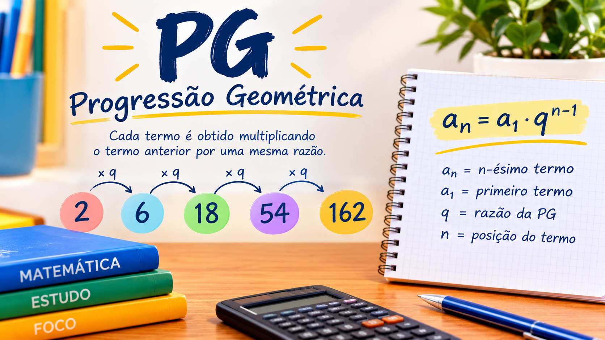

Progressão Geométrica

O que é progressão geométrica
A Progressão Geométrica (PG) é uma sequência numérica em que cada termo, a partir do segundo, é obtido pela multiplicação do termo anterior por um número fixo chamado razão (q).
Como identificar uma PG?
Uma PG é uma sequência numérica em que cada termo é obtido pela multiplicação do termo anterior por um número fixo, chamado razão q. Como identificar: divida um termo pelo anterior. Se o resultado for sempre o mesmo, a sequência é uma PG.
Exemplo: 2, 6, 18, 54, 162...
6 dividido 2 = 3
18 dividido 6 = 3
54 dividido 18 = 3
Como o resultado é sempre 3, essa sequência é uma PG de razão q = 3.
Atenção para o ENEM: Não confunda PA com PG! Na PA, somamos ou subtraímos sempre o mesmo valor; na PG, multiplicamos ou dividimos sempre pelo mesmo valor. Se os termos estiverem aumentando ou diminuindo muito rapidamente, investigue se há uma multiplicação por uma razão constante. Isso pode indicar uma PG.
Potências Aliadas
O termo geral da PG é uma fórmula que permite encontrar qualquer termo de uma sequência geométrica sem precisar calcular todos os termos anteriores.
Formula: an = a1 . qn-1
an: termo que queremos descobrir.
a1: primeiro termo da PG.
q: razão da PG.
n: posição do termo desejado.
Atenção para o ENEM: Fique atento a expressões como “aumenta 10% a cada mês” ou “dobra a cada período”. Elas indicam uma possível PG, pois o valor é multiplicado por uma razão constante.